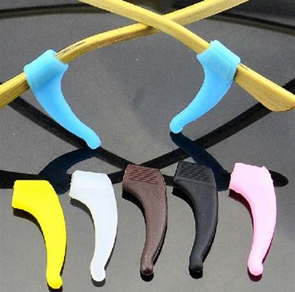

Glass Ear Grips
are a practical and functional accessory that is designed to provide additional comfort and support to your eyewear. The grips are made of
high-quality materials, such as silicone or rubber, and they are designed to fit snugly over the arms of your glasses or sunglasses.